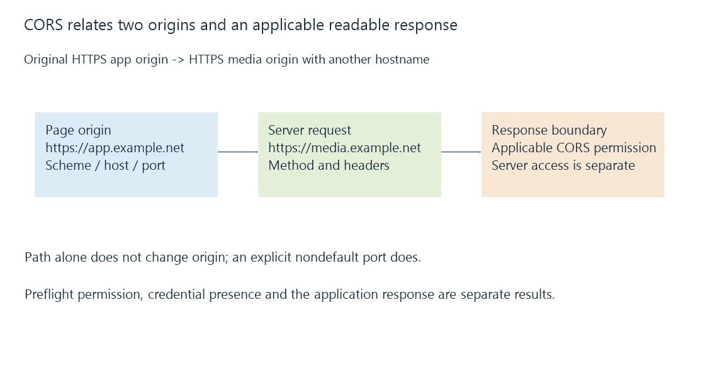

Same-origin policy, CORS and readable responses
The same-origin policy and CORS govern script access across browser origins, with preflight, credentials and allowed responses separate from the server’s authentication and authorization.
A browser can receive an application response yet refuse to expose it to the requesting script. CORS is one mechanism that decides whether an applicable cross-origin response can be read.
The server’s own decision to authenticate or authorize the request is another stage.
Origin means scheme, host and port
Compare these original URLs with https://media.example.net/:
| Other URL | Same origin? |
|---|---|
| https://media.example.net/library | Yes |
| https://media.example.net:443/ | Yes, using the scheme-default port |
| https://media.example.net:8920/ | No |
| http://media.example.net/ | No |
| https://app.example.net/ | No |
Paths select resources within an origin. Changing a path alone does not create another origin, while a different scheme or effective port does.
Two hostnames resolving to the same IP do not become one origin. The browser uses the requested URL identity, not an assumption that the addresses share a physical machine.

A preflight checks the intended method and headers
A request using a nonsafelisted header such as Authorization can require a preflight before the later application request proceeds.
This original reduced descriptor shows the permission inputs:
{
"origin": "https://app.example.net",
"target": "https://media.example.net/api/item",
"method": "GET",
"requestHeaders": ["authorization"],
"requiresPreflight": true
}
The browser’s OPTIONS exchange describes the intended cross-origin method/header use. An appropriate preflight result is not itself the authenticated GET operation or proof that the requested item is permitted.
The later request and response still need their own applicable CORS and application results.
Preflight and application results are two exchanges
An original readable preflight fragment for the descriptor above is:
OPTIONS /api/item HTTP/1.1
Host: media.example.net
Origin: https://app.example.net
Access-Control-Request-Method: GET
Access-Control-Request-Headers: authorization
A corresponding reduced successful permission fragment is:
HTTP/1.1 204 No Content
Access-Control-Allow-Origin: https://app.example.net
Access-Control-Allow-Methods: GET
Access-Control-Allow-Headers: authorization
Access-Control-Max-Age: 120
These illustrate relevant fields with a generic resource path; they are not captured packets or an executed Emby endpoint. Actual framing and all applicable protocol requirements remain in their specifications.
The permission result lets the browser proceed with the stated cross-origin GET/header combination. The later GET can still return 401 if its credential evidence is invalid. With appropriate response CORS fields, the script can read that authentication rejection.
By contrast, a successful application response lacking the applicable response permission can remain unreadable to the script. Preflight permission and readable application result need separate evidence.
The preflight permission cache is distinct from caching the application resource itself. Its key/context and lifetime concern permitted method/header use; retaining permission does not mean the requested media response or account authorization is cached as successful.
Credentials restrict the allow-origin relationship
For an original credentialed-response policy:
{
"requestOrigin": "https://app.example.net",
"credentialsMode": "include",
"allowOrigin": "*",
"allowCredentials": true,
"readableByScript": false
}
Under the Fetch rules, the wildcard allow-origin value is not sufficient for this credentialed result. The response needs the appropriate explicitly allowed origin and other applicable checks.
Allowing credentials does not mean every origin should receive a credentialed response. The permitted origin is a policy input, and different requests can require different cache/context handling.
The object is an explanatory projection, not a suggested server configuration.
Some requests can be sent without preflight
A qualifying simple request can go to another origin before the browser checks whether the script may read its response.
A failed readable-response result therefore does not prove that the server received no request. This matters for operations that change state.
CORS is not a replacement for server authentication, authorization or defenses appropriate to state-changing requests. The browser’s read boundary and the service’s operation policy protect different relationships.
Likewise, CORS does not constrain a native app or command-line client through the same browser mechanism.
Credential mode does not force every cookie to be sent
A request configured to include credentials still follows the browser’s applicable cookie/security rules. The cookie scope and other browser policy can affect whether any credential is actually attached.
Likewise, an Authorization header is a separate explicitly supplied credential mechanism. A preflight allowing that header does not create its value or decide that the server should accept it.
The observable request therefore needs its actual credential presence kept separate from the application’s requested credential mode and the response’s allow-credentials declaration.
Media elements and script access can have different requirements
Displaying a resource through a media/image element and reading or manipulating it from script are not always the same operation.
A native Emby app, a server-hosted web app and a hosted web client can consequently expose different connection behavior. The actual request mode, page origin, credentials and resource use belong in the comparison.
Mixed-content and local-network-access processing can reject a request at another gate before a CORS response becomes relevant.
The failing exchange identifies the stage
A preflight rejection, server-side 401/403, TLS failure and unreadable successful response identify different stages.
See Also
- Mixed content and a browser’s secure-page boundary
- Hostnames, URLs and the complete server endpoint
- Media server authentication and credential evidence
- Browser media playback and its loading paths